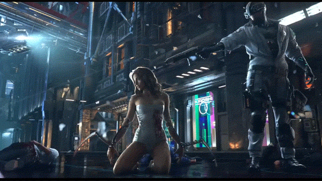

A cultura cyberpunk teve seu inicio por volta da década de 40 e 50, dentro dos livros de ficção científica com uma visão utópica. O termo “Cyberpunk” tem como significado a subcultura que é focada na cybercultura, tem como preferência músicas psicodélicas, da junção do punk rock e música eletrônica e por adereços de moda futurista. Cyberpunk é um subgênero da ficção científica, é conhecido por seu enfoque na “Alta tecnologia e baixo nível de vida” (“High tech, low life”).
Tem como característica principal na estética visual o uso de neon com cores vibrantes, na parte rica da cidade tem a presença de prédios monumentais, na parte pobre, as antigas cidades que são assoladas pela criminalidade.
Como por exemplo o filme Akira (onde fiz a análise dele), há trechos onde mostra as, já citadas, características. No video a seguir é possível ver um trecho onde mostra os prédios, as holografias e etc.
No universo cyberpunk é muito comum ser abordado a temática da substituição de membros do corpo ou até mesmo o corpo inteiro (conservando somente o cérebro ou consciência). Um ótimo exemplo é a animação que Ana Ligia analisou, chamada Ghost in the shell.
Nessa animação de 1995 a protagonista foi submetida a substituição do corpo por um corpo robótico, onde só se conservou sua consciência, mas que a personagem sofre de uma crise de existência, pois como Ana Ligia descreveu “ Devido a esse fato, ela se sente apenas um fantasma do ser humano que um dia ela foi.”
Um grande exemplo de um cenário distópico analisado por Leandro Pierin, é Matrix, os humanos criaram as máquinas e elas se voltaram contra eles, para tentar destruir as máquinas, os humanos queimaram o céu, criando uma nuvem densa que cobria o planeta, evitando que a luz solar entrasse no planeta, mas as máquinas utilizaram de outra fonte de energia, os humanos, Onde elas produziam desde a gestação, até a morte.
Outra referência de distopia é Blade Runner, onde a Corporação Tyrel cria humanos geneticamente alterados chamados Replicantes, os replicantes são mais fortes, resistentes e inteligentes do que os humanos, então como forma de defesa, eles tem como tempo de vida apenas 4 anos, então vivem na busca por tentar prolongar suas vidas.